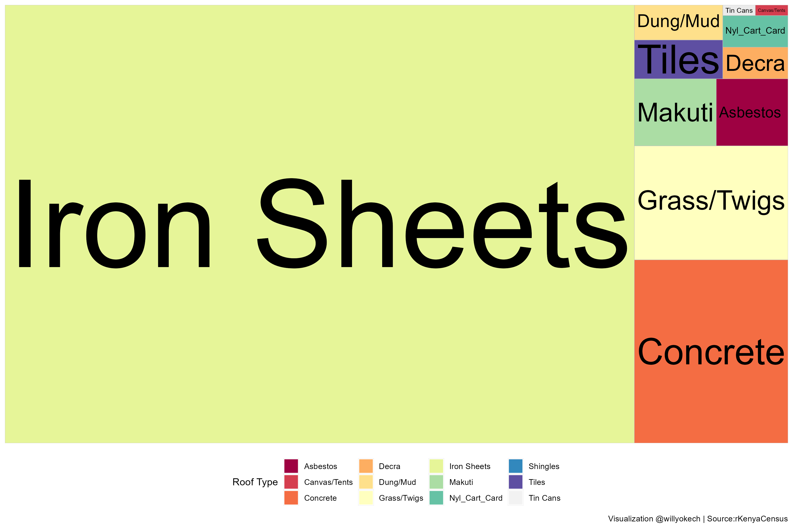
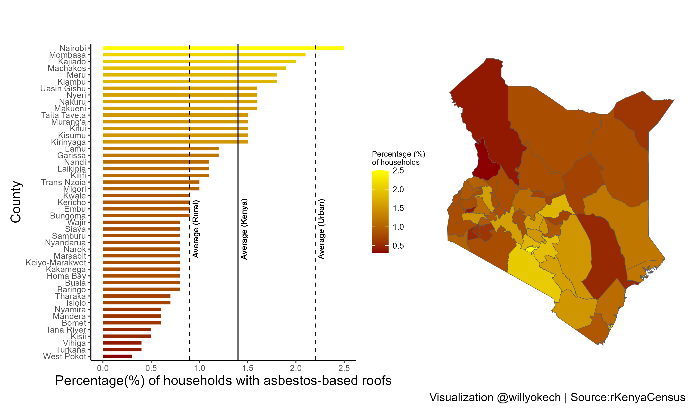
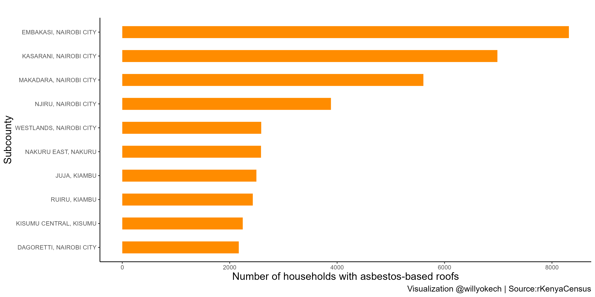

Introduction
An aerial view of most settlements in Kenya will demonstrate that many residential home roofs are constructed using iron sheets.
Indeed, this is confirmed by the Kenya Population and Housing Census (2019) report 1 2 where we see that 4 out of every 5 households (total number = 12,043,016) in Kenya is roofed using iron sheets (Figure 1). Overall, the top 5 building materials are iron sheets (80.3%), concrete (8.2%), grass/twigs (5.1%), makuti (sun-dried coconut palm leaves; 1.6%), and asbestos (1.4%). Despite the widespread use of iron sheets, it is surprising to note that 1.4% (2.2% urban and 0.9% rural) of residential household roofs (which is approximately 170,000) are covered with asbestos-based roofing materials (NB: this figure does not include public buildings such as educational institutions and government facilities).

Figure 1: Roof types in Kenya (visualizations generated in RStudio)
Asbestos and its potential risks
Asbestos refers to a class of six minerals that naturally form a bundle of fibers. These fibers have many properties that make them attractive, including a lack of electrical conductivity, and chemical, heat, and fire resistance. Historically, asbestos has been used for various commercial and industrial applications, including roofing shingles, automobile brakes, and textured paints for walls and ceilings 3. However, using asbestos for products that come into regular contact with humans is quite problematic. Why? Asbestos is a known human carcinogen, and the primary risk factor for most mesotheliomas is asbestos exposure 4 5. Furthermore, asbestos exposure (depending on the frequency, amount, and type) can cause asbestosis, pleural disease, and cancer. If asbestos-based materials remain intact, there is minimal risk to the user, but if materials are damaged via natural degradation or during home demolition and remodeling, tiny asbestos fibers will be released into the air 6 7. In Kenya, Legal Notice No. 121 of the Environmental Management and Coordination (Waste Management) Regulations (2006)8 states that waste containing asbestos is classified as hazardous. Why should Kenyans be concerned about this? In the 2013/2014 financial year, Kenya spent approximately one-tenth of its total health budget on asbestos-related cancers 9 10 11.
Where do we find high numbers of asbestos-based roofs in Kenya? As previously stated, 1.4% of households in Kenya have asbestos-based roofs. Figure 2 demonstrates the percentage of households with asbestos-based roofs in every county in Kenya. Interestingly, 4 (Nairobi, Kajiado, Machakos, and Kiambu) out of the top 6 counties (from a total of 47) fall within the Nairobi Metropolitan region.
Where do we find high numbers of asbestos-based roofs in Kenya?
As previously stated, 1.4% of households in Kenya have asbestos-based roofs. Figure 2 demonstrates the percentage of households with asbestos-based roofs in every county in Kenya. Interestingly, 4 (Nairobi, Kajiado, Machakos, and Kiambu) out of the top 6 counties (from a total of 47) fall within the Nairobi Metropolitan region.

Figure 2: Percentage(%) of households with asbestos-based roofs distributed by county (visualizations generated using RStudio)
Next, I investigated the subcounties with the highest number of households with asbestos-based roofs. The top 5 subcounties are located within Nairobi county, with Embakasi subcounty taking the lead with just over 8,000 households.

Figure 3: The top ten subcounties with the highest number of households that have asbestos-based roofs (visualizations generated using RStudio)
Conclusion
Overall, this study demonstrates that a notable proportion of Kenyan households used asbestos-based roofing materials, with Nairobi Metropolitan county accounting for the largest number of households. It is widely acknowledged that asbestos is harmful to our health, and asbestos-related diseases impose a significant burden on the economy. However, the impact of these roofs on the health of residents may not be fully apparent as asbestos exposure may also occur in various settings such as educational facilities and government institutions. To lessen the impact of asbestos exposure, it would be beneficial for local/county governments to educate residents about the dangers of asbestos and facilitate the complex and costly removal of asbestos-based roofing materials.
Footnotes
Kenya National Bureau of Statistics. The 2019 Kenya Population and Housing Census. Volume I: Population by County and Sub-County and Volume III: Distribution of Population by Age and Sex.↩︎
Shelmith Kariuki (2020). rKenyaCensus: 2019 Kenya Population and Housing Census Results. R package version 0.0.2.↩︎
Learn About Asbestos (no date) EPA. Environmental Protection Agency. Available at: https://www.epa.gov/asbestos/learn-about-asbestos (Accessed: December 1, 2022).↩︎
Asbestos exposure and cancer risk fact sheet (no date) National Cancer Institute. Available at: https://www.cancer.gov/about-cancer/causes-prevention/risk/substances/asbestos/asbestos-fact-sheet (Accessed: December 1, 2022).↩︎
Asbestos (no date) World Health Organization. World Health Organization. Available at: https://www.iarc.who.int/risk-factor/asbestos/ (Accessed: December 1, 2022).↩︎
Learn About Asbestos (no date) EPA. Environmental Protection Agency. Available at: https://www.epa.gov/asbestos/learn-about-asbestos (Accessed: December 1, 2022).↩︎
Asbestos and your health (2016) Centers for Disease Control and Prevention. Centers for Disease Control and Prevention. Available at: https://www.atsdr.cdc.gov/asbestos/index.html (Accessed: December 1, 2022).↩︎
Act Title: ENVIRONMENTAL MANAGEMENT AND CO-ORDINATION (no date) No. 8 of 1999. Available at: http://kenyalaw.org:8181/exist/kenyalex/sublegview.xql?subleg=No.+8+of+1999 (Accessed: December 1, 2022).↩︎
Okoth, D. (2013) Slow transition from use of asbestos raises concern as cancer cases rise, The Standard. Available at: https://www.standardmedia.co.ke/lifestyle/article/2000096118/slow-transition-from-use-of-asbestos-raises-concern-as-cancer-cases-rise (Accessed: December 1, 2022).↩︎
GCR, S. (2016) Kenya faces cancer epidemic caused by asbestos roofs, Global Construction Review. Available at: https://www.globalconstructionreview.com/kenya-faces-cancer-epid7emic-caus7ed-asbe7stos/ (Accessed: December 1, 2022).↩︎
Irungu, S. (2020) Exposure to the noxious asbestos needs to be alleviated with a lot of care, Kenya Climate Innovation Center (KCIC). Available at: https://www.kenyacic.org/2019/11/exposure-to-the-noxious-asbestos-needs-to-be-alleviated-with-a-lot-of-care/ (Accessed: December 1, 2022).↩︎